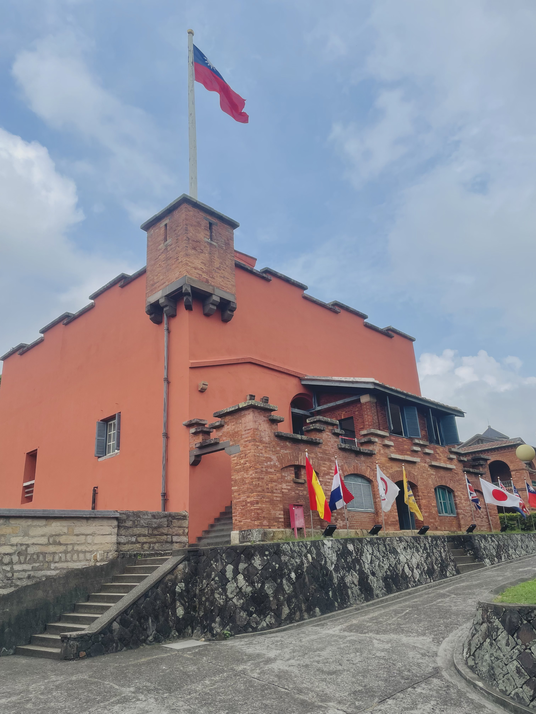
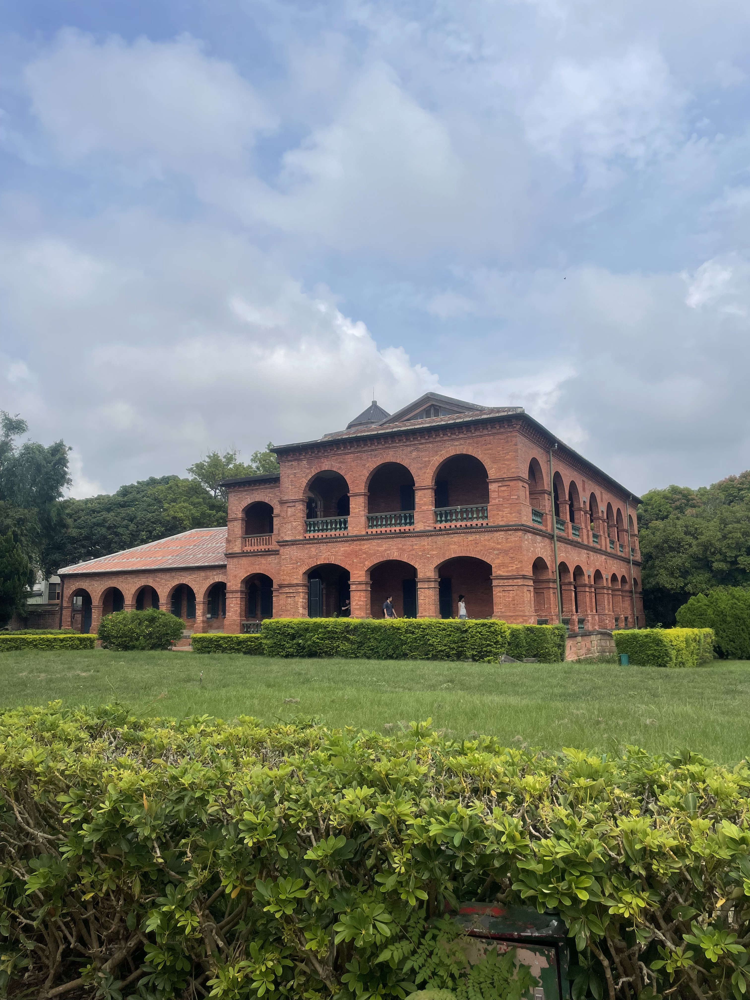
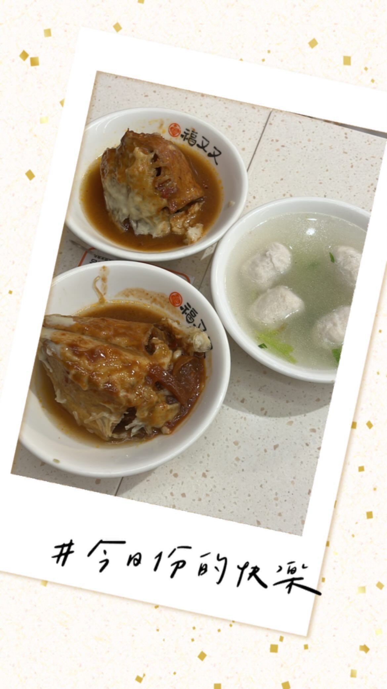
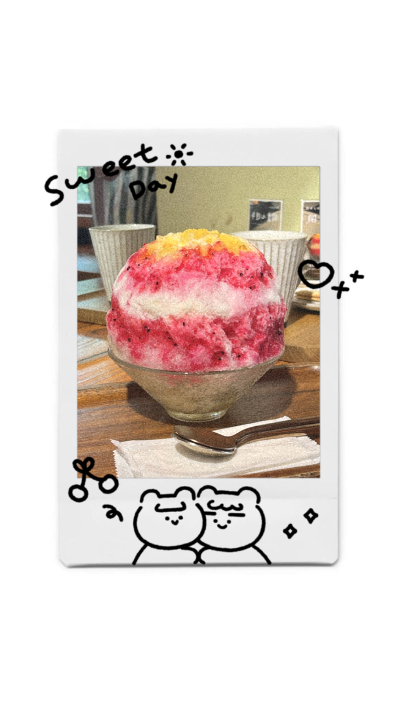
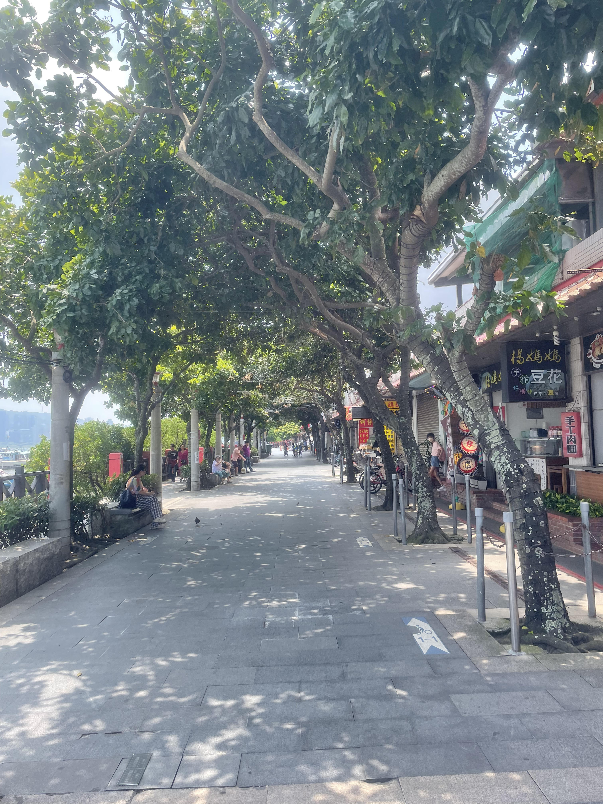
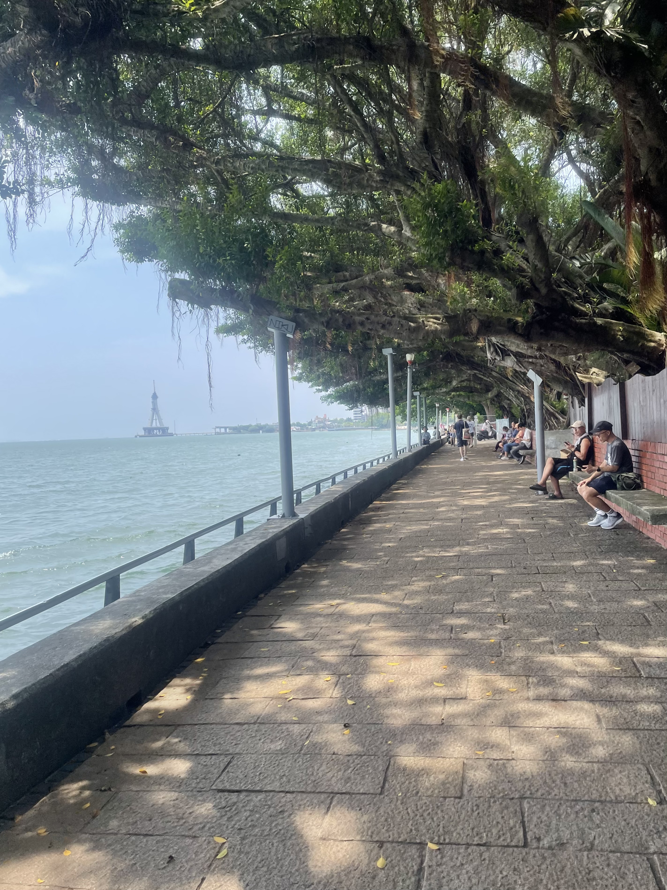
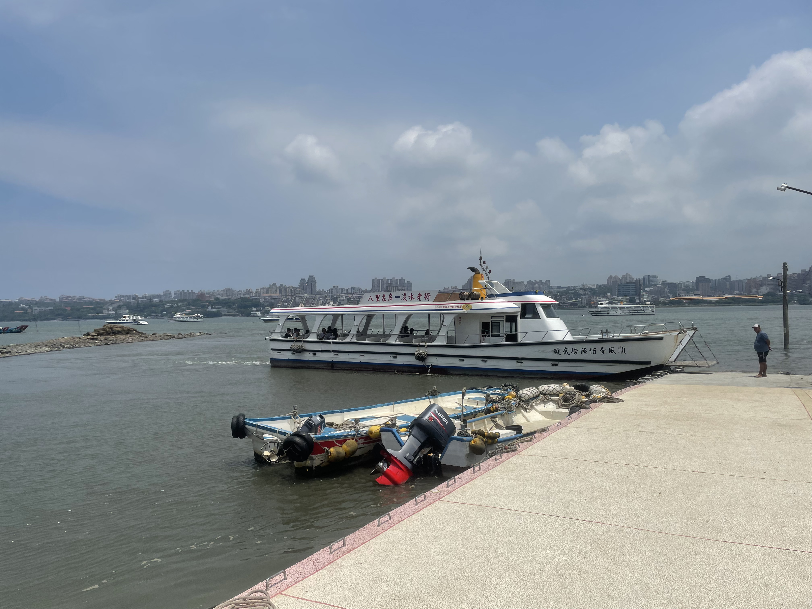

新北市淡水區
基本資訊
位於新北市最北端，地處淡水河出海口，北臨台灣海峽，西鄰八里區，南接新北市中和、三重與台北市，因地理位置獨特而形成豐富的河岸與濱海景觀。淡水自清代以來就是重要港口與商業重鎮，歷史文化底蘊深厚，並保留許多古蹟與傳統聚落。 淡水區的自然景觀與人文歷史相輔相成，沿河岸的淡水老街、紅毛城及滬尾砲台等歷史建築，展現出殖民、商港與地方文化的交融。區內河口濕地、海岸沙洲與觀景步道，提供居民與遊客親近水域、觀賞夕陽與水鳥生態的空間，使淡水兼具歷史旅遊與休閒活動的價值。
推薦景點
| 淡水老街
沿淡水河岸展開，是北台灣最具代表性的歷史街區之一。街道保留傳統騎樓與紅磚建築，呈現出早期港口城市的商業風貌，街區的規模不大，但步行其間即可感受到濃厚的歷史氛圍與人文氣息。 老街以小吃與特色商店聞名，遊客可品嚐阿給、魚丸、鐵蛋、甜不辣等在地美食，也能購買伴手禮與工藝品，體驗淡水特有的生活文化。沿街商店與街道氛圍相互呼應，形成新舊文化交融的景象，特別在假日或夕陽時分，街道更顯熱鬧與迷人。
| 紅毛城
是淡水最具代表性的歷史建築之一，也被視為台灣早期殖民歷史的重要見證。建築最早由西班牙人在17世紀所建，後由荷蘭人、清朝與英國等勢力先後使用，因曾經作為英國領事館而得名「紅毛城」，象徵西方勢力在淡水的歷史影響。 建築採用紅磚與石材結構，外觀厚實穩固，兼具歐式城堡風格與防禦功能。館內保存部分歷史文物與展示資料，介紹淡水港口的發展、殖民歷史與在地文化變遷。遊客可沿著城堡外牆與庭院散步，俯瞰淡水河口及海岸景觀，感受歷史與自然的交織。






